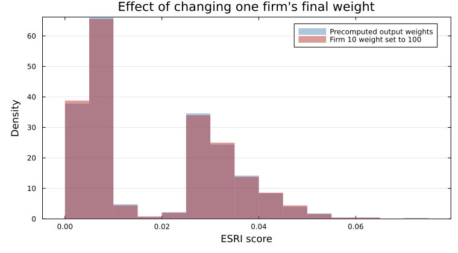
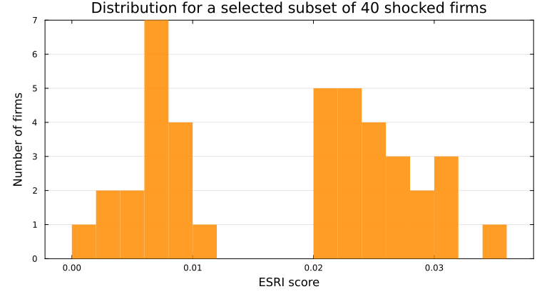

Examples
Economy-wide run
using ESRIcascade, SparseArrays, Statistics, Random
Random.seed!(42)
N = 1_000
W = sprand(N, N, 0.01)
W[1:N+1:end] .= 0
info = IndustryInfo(rand(1:4, N), [true, true, false, false])
econ = ESRIEconomy(W, info)
scores = esri(econ; maxiter = 40, tol = 1e-3, threads = false)
nothingIndustryInfo(industry_of_firm) uses a purely linear production function by default. Pass an essentiality vector or an integer-code matrix such as Matrix{UInt8} when the production function should include essential inputs.
W[i, j] is the nonnegative supply from supplier i to customer j.

Bundled IHS classification
Use one NACE Rev. 2 four-digit code per firm. Keep the codes as strings to preserve leading zeros.
ihs_W = [0.0 2.0; 1.0 0.0]
firm_industry_codes = ["0111", "0112"]
codes = ihs_industry_codes()
industry_id = Dict(code => i for (i, code) in pairs(codes))
industry_of_firm = [industry_id[code] for code in firm_industry_codes]
ihs_info = IndustryInfo(industry_of_firm, ihs_input_classification())
ihs_econ = ESRIEconomy(ihs_W, ihs_info)
ihs_scores = esri(ihs_econ)
nothingCustomer-specific input classes
Rows are supplier industries and columns are customer industries. Use a Matrix{UInt8} with codes 0, 1, and 2.
custom_W = [0.0 2.0 1.0; 1.0 0.0 3.0; 4.0 1.0 0.0]
input_classification = UInt8[2 1 0; 0 2 1; 1 0 2]
custom_info = IndustryInfo([1, 2, 3], input_classification)
custom_econ = ESRIEconomy(custom_W, custom_info)
custom_scores = esri(custom_econ; maxiter = 40, tol = 1e-3)
nothingCode 0 keeps an input in the network and upstream propagation and contributes to the linear-input denominator. Codes 1 and 2 select the linear and essential downstream operators and add their direct entries.
Single firm with full details
res = esri(econ, 5; details = true, maxiter = 20, tol = 1e-3)
(res.esri, length(res.upstream), length(res.downstream))
# output
(0.3400687234719314, 1000, 1000)This call returns the complete scenario state. res.upstream stores the remaining production after customer losses. res.downstream stores the remaining production after input shortages. Values near zero identify the strongest stress locations.
Selected components
up_only = esri(econ, 3; components = :upstream, maxiter = 25, tol = 1e-3)
down_only = esri(econ, 3; components = :downstream, maxiter = 25, tol = 1e-3)Custom final weights
output_weights = vec(sum(W; dims = 2))
scores_output = esri(econ; final_weights = output_weights, maxiter = 25, tol = 1e-3)
spike_weights = copy(output_weights)
spike_weights[10] = 100.0
scores_spike = esri(econ; final_weights = spike_weights, maxiter = 25, tol = 1e-3)
(scores_output ≈ scores, round(mean(scores_spike) - mean(scores_output); digits = 4))
# output
(true, 0.0009)
Here output_weights are each firm's baseline outputs, computed directly from the same W. They reproduce the default score distribution. Setting one firm's weight to 100 changes the distribution while preserving the network dynamics and shock propagation.
The default score uses total output as its denominator. Custom final_weights use sum(final_weights) and produce a weighted average loss. A zero total weight returns 0.
Subset of default firm shocks
subset_indices = collect(25:25:1_000)
subset_scores = esri(econ; firm_indices = subset_indices, maxiter = 20, tol = 1e-3, threads = false)
count(!iszero, subset_scores), round.(extrema(subset_scores[subset_scores .> 0]); digits = 3)
# output
(40, (0.006, 0.059))
Custom shock vector
psi = ones(N)
psi[1] = 0.0
psi[2] = 0.0
psi[3] = 0.5
psi[4] = 0.5
psi[5] = 0.8
# psi[i] is firm i's exogenous capacity limit.
# 1.0 makes full capacity available. 0.0 closes the firm.
# Values between these limits make partial capacity available.
scenario = esri_shock(econ, psi; details = true, maxiter = 25, tol = 1e-3)
(
scenario.esri,
round.(scenario.upstream[1:3]; digits = 3),
round.(scenario.downstream[1:3]; digits = 3),
)
# output
(0.31872022292698855, [0.0, 0.0, 0.5], [0.0, 0.0, 0.5])Single-firm call with explicit shock
psi2 = ones(N)
psi2[1:3] .= 0.4
res1 = esri(econ, 7; shock = psi2, details = true, maxiter = 25, tol = 1e-3)
res2 = esri_shock(econ, psi2; details = true, maxiter = 25, tol = 1e-3)
res1.esri ≈ res2.esri
# output
trueMatrix-first wrappers
value = compute_esri(W, info, 7; maxiter = 20, tol = 1e-3)For the submitted runtime comparison and benchmark conditions, see Performance.